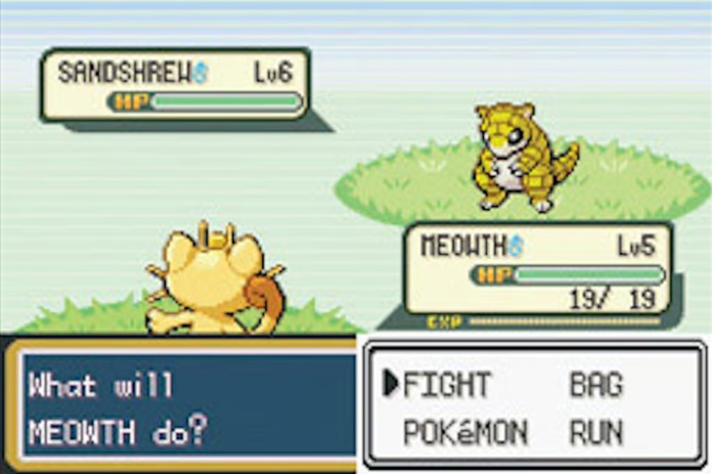

Primeros Pasos
Antes incluso de dividirnos los roles de trabajo, buscamos una idea central por la cual girará
todo el juego. En nuestro caso fue el azar, basandonos en Slay the spire, del cual tomamos ciertas ideas.
Repartimos los roles y nos propusimos las metas para cada uno. También pactamos las reuniones semanales.

Comienzos
Luego de que cada uno tenga claro su rol, nos planteamos pequeñas
metas, por ejemplo definir a los vikingos y los reyes como el estilo del juego, el combate por
turno como la jugabilidad, los posibles eventos diferentes (fogata, enemigo, cofre y poción) y
un mapa como menú entre los distintos puntos.
- Scrum Master
-
Organizo el tiempo, y repartio las tareas de grupo.
- Setear y organizar la screen1.
-
Organizo el tiempo, y repartio las tareas de grupo.
- Project Development
- Explicó que el videojuego se tendría que poder jugar en un celular.
- Developer Team
- Empezaron a desarrollar la logica y el mapa.

Problemas
Durante el desarrollo de la jugabilidad se nos presentó el
problema del reinicio de las estadísticas al cambiar de Screens por lo que tuvimos que usar
una base de datos para poder manipularlos ya sea a través de los enemigos o los objetos.
- Scrum Master
-
Organizo semanalmente las reuniones. Donde se discutieron los avances del proyecto.
-
- Project Development
- Detalló y resumió los puntos importantes a tener en cuenta a desarrollar el videojuego según requisitos y condiciones del cliente.
- Developer Team
- Dividieron el mapa en eventos con sus respectivas características y opciones, además de solucionar bugs.

Organización de niveles
Mientras organizaremos como sería la aparición y el orden de los
eventos, también estábamos creando el funcionamiento de la aparición de objetos en los
cofres y la curación en las fogatas.
- Scrum Master
-
Evaluó si cada puesto cumplia con las tareas propuestas, y incorporandose en las mismas para poder entender, explicar y ayudar.
-
- Project Development
- Revisó que los requisitos del cliente se estes cumpliendo el tiempo y forma.
- Developer Team
- Organizamos los eventos con sus elementos y posibilidades de aparición.

Enemigos
Nos encargamos de crear no solo a los distintos enemigos sino
que agregamos la estadística de Critico y Velocidad para agregarle más variabilidad a
las partidas de cada juego. Aunque se nos presentaron errores a la hora de calcular el
daño y la reducción de vida tanto en el jugador como en el enemigo
logramos solucionarlos.
- Scrum Master
-
Profundizó en los parametros escenciales que se tuvieron en cuenta para ampliar las posibilidades del juego.
-
- Project Development
- Comunicó al equipo de la necesidad de utilizar imagenes personalizadas para identificar a los enemigos.
- Developer Team
- Descargaron las imagenes y codificaron el sistema batallas incorporando profundidad al juego.
Detalles
Por último tuvimos que pulir algunos detalles ya sea con la
música y los efectos de sonido, pequeños cambios en las estadísticas para facilitar el
juego y agregar las pantallas finales ya sea luego de perder o ganar una partida. Y
agregar la posibilidad de revivir al perder por primera vez.
- Scrum Master
-
Ultimó detalles de presentación y desarrollo en cuestiones de proyecto.
-
- Project Development
- Verificó el cumplimiento de los objetivos propuestos, y ayudo en el desarrollo de comentarios de caracter cómico.
- Developer Team
- Incorporó efectos de sonido y comentarios, para finalizar la programación del proyecto.
-
Web Developer
- Creo una página web, para mostrar nuestro proyecto y expandir información al público.